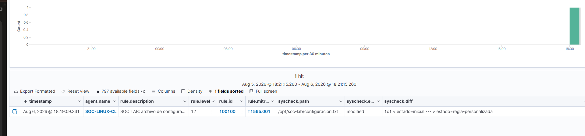

[ 001 · PROYECTO PRINCIPAL ]
Laboratorio SOC con Wazuh
Entorno defensivo con Windows, Linux, Sysmon y Wazuh. Incluye fuerza bruta SSH, PowerShell codificado, FIM, respuesta activa, Wireshark, tres informes profesionales y una regla propia validada sin falsos positivos.
4/4 escenarios
3 informes
1 regla propia